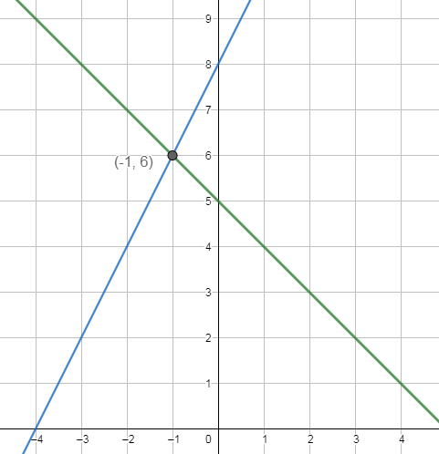

En las dos situaciones mostradas en el punto anterior no hemos podido más que establecer una relación entre las dos incógnitas y dar posibles combinaciones de resultados.
Pero, ni hemos podido determinar un número único de goles marcados por cada uno de los delanteros del F.C Barcelona, ni de goles marcados por cada uno de los dos equipos.
En ambas situaciones nos falta una pista: otra ecuación. Al tener dos incógnitas, para poder encontrar unos valores únicos para los goles marcados, necesitamos al menos dos pistas, es decir, dos ecuaciones. Si ambas pistas son "buenas", entonces sí podremos encontrar unos valores únicos para las incógnitas planteadas.
Con las dos pistas tendremos lo que en matemáticas se conoce con el nombre de sistema de ecuaciones.
Sistema de dos ecuaciones lineales con dos incógnitas.
| Un sistema de dos ecuaciones lineales con dos incógnitas, como su propio nombre indica, está compuesto por dos ecuaciones lineales con dos incógnitas. Es decir, un conjunto de dos ecuaciones como las siguientes: \[ \begin{cases} \begin{array}{r@{\;}c@{\;}r@{\;}c@{\;}l} ax & + & by & = & c \\ a'x & + & b'y & = & c' \end{array} \end{cases} \] |
Resolver el sistema es encontrar una solución común de ambas ecuaciones. Por tanto, una solución del sistema es una pareja de valores \(\pmb{(x,y)}\) que cumple ambas ecuaciones de manera simultánea.
Veremos diferentes maneras de resolver un sistema de ecuaciones lineales. Comenzamos con el método gráfico que nos mostrará que resolver un sistema de ecuaciones consiste, básicamente, en calcular los puntos de corte de sus dos rectas asociadas.
Método gráfico
En el punto anterior, vimos que existe una relación entre una ecuación lineal con dos incógnitas y su representación gráfica (una recta). Además, sabemos que una solución del sistema de ecuaciones es una solución común de ambas ecuaciones.
Si interpretamos lo anterior desde un punto de vista gráfico, una solución del sistema vendrá dada por las coordenadas \((x, y)\) de un punto que pertenezca a las dos rectas, esto es, de un punto de corte de las dos rectas.
Por tanto, para resolver un sistema de ecuaciones mediante el método gráfico, debemos:
- Representar gráficamente la recta de cada una de las ecuaciones.
- Determinar los puntos comunes de ambas rectas.
Ejemplo: Resolución de un sistema por el método gráfico
Sistema de ecuaciones a resolver:
\[ \left\{ \begin{array}{rrcr} x & + & y & = & 5 \\ 6x & - & 3y & = & -24 \end{array} \right. \]
🟢 Paso 1: Despejar la incógnita "y" de cada ecuación
Para poder representar las líneas, primero dejamos sola a la variable \(y\) en ambos lados:
\[ \left\{ \begin{array}{rrcr} x & + & y & = & 5 \\ 6x & - & 3y & = & -24 \end{array} \right. \implies \left\{ \begin{array}{rcr} y & = & 5 - x \\ y & = & \dfrac{-24 - 6x}{-3} \end{array} \right. \]
🟢 Paso 2: Crear una tabla de valores para cada recta
Le damos valores sencillos a la letra \(x\) (como el 0, el 1 o el -1) para averiguar cuánto vale la \(y\) y conseguir los puntos de cada línea:
🟢 Paso 3: Encontrar el punto de corte en la gráfica
Al dibujar y unir los puntos de las tablas, vemos que ambas rectas se cruzan en un único lugar. Como puedes observar en las tablas, el punto donde coinciden los mismos resultados es el punto A(-1, 6).
La única solución es el punto de corte de ambas rectas: \(\pmb{x = -1}\) e \(\pmb{y = 6}\).

Como puedes ver, dibujar las rectas de cada una de las ecuaciones no es una tarea excesivamente compleja. Basta despejar y en función de x, elaborar una pequeña tabla de valores y representar los puntos obtenidos.
Ejercicio
Relaciona cada tarjeta con su pareja.
Relaciona cada tarjeta con su pareja.
\n\n


Ejercicios
Selecciona en cada caso la respuesta correcta.